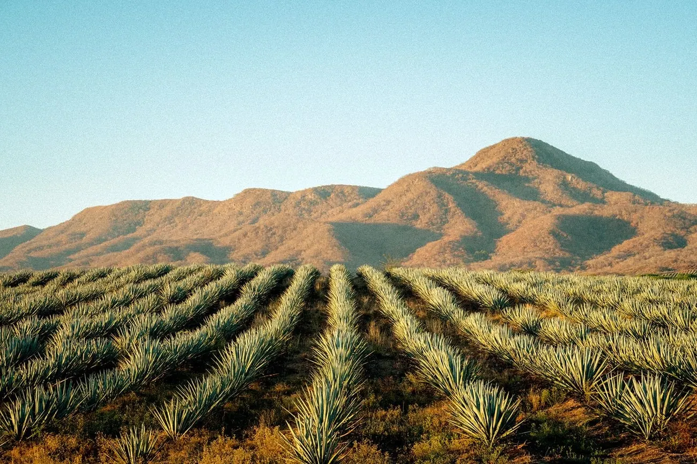
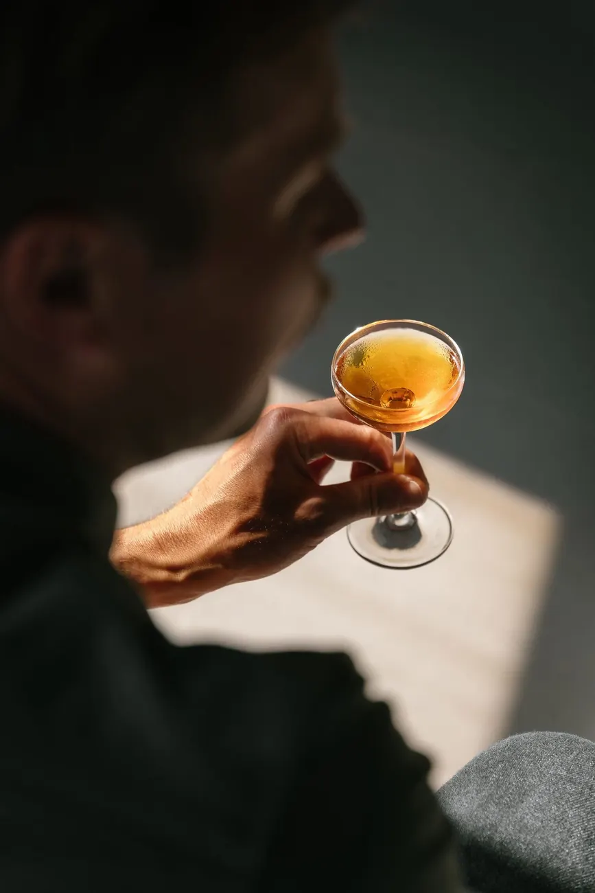
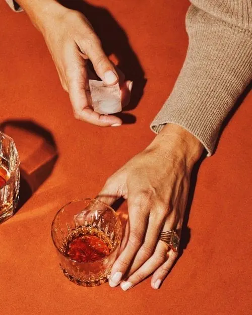

Jima
Se corta la penca cuando la planta está por florecer, no antes. Ocho a doce años.
Ambiente · 24°
Mezcal de olla de barro, en Santiago Matatlán. Lo que sale del alambique entra tal cual en la botella; cuando el lote se acaba, se acaba.
Se corta la penca cuando la planta está por florecer, no antes. Ocho a doce años.
Piña enterrada sobre piedra de río y leña de encino. Tres días bajo tierra.
Molienda en tahona de piedra, tirada por caballo. La fibra se abre sin que el calor la toque.
Dos destilaciones en barro. El barro respira y deja un dejo que el cobre no da.



Cuatro personas por grupo. Se camina el campo, se destapa un horno si lo hay y se cata directo de la olla.
Pedir una visita